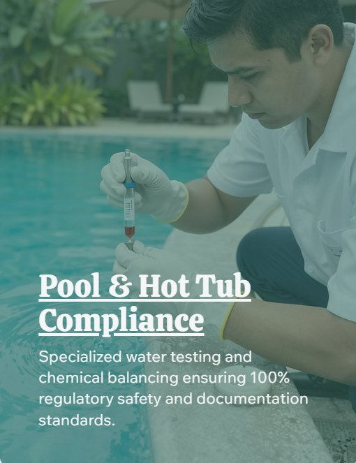

Pool & Hot Tub Compliance
Specialized water testing and chemical balancing support focused on regulatory safety and documentation standards.
Maintenance Standards & Aquatic Compliance
A detailed approach to water quality, laboratory analysis, and safety documentation, ensuring every facility meets high standards of property readiness and guest safety.
Advanced water testing protocols to maintain chemical balance and meet indoor/outdoor aquatic standards.
Coordination of regular lab samples and water testing schedules with professional vendor communication.
Meticulous maintenance records and regulatory documentation for property readiness and local aquatic safety codes.
Compliance matters
Hotel-grade standards applied to aquatic care.
Pool and hot tub spaces need more than a quick glance. They need consistent testing, documented routines, clear records, and safety-first thinking.
